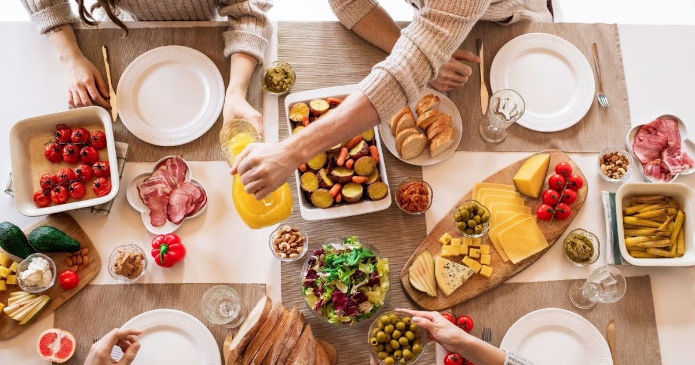

Alimentação Consciente
A alimentação tem um grande impacto no meio ambiente, desde a produção até o descarte. Uma dieta baseada em produtos locais, orgânicos e de origem vegetal pode reduzir significativamente a pegada ecológica individual. Além disso, reduzir o desperdício de alimentos, planejando as compras e consumindo de forma mais